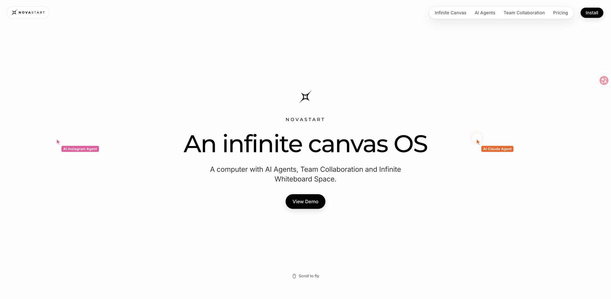

把无限画布当操作系统：应用、队友和 AI agent 共用一块画布。
深色无限画布上漂浮三个真实应用窗口，虚线连到一条版本时间线
Novastart 的视觉语言：深色无限画布当桌面，真实应用窗口带细边框和标题栏浮在上面；虚线把窗口接回版本时间线；agent 光标和人类光标长得一样，只是名字不同 —— 它在说“agent 是同事”。

一个无限画布操作系统：应用、队友和 AI agent 共享同一块可缩放的画布，画布可以保存下来做视觉组织。
官方说可以同时和最多 10 个 AI agent 一起工作，每个 agent 有自己的鼠标和键盘，你随时可以接手。它强调的是“在画布上跑真实应用”，而不是串流视频。